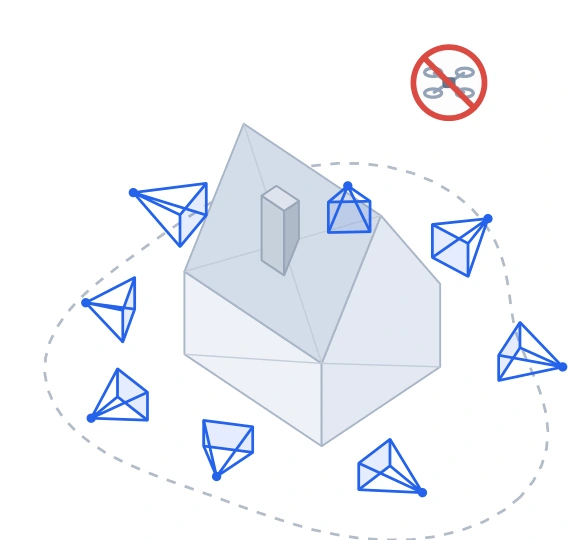

Slotů pro rohy budovy
WireDiT začíná s 64 náhodnými polohami v prostoru. Postupně je přesouvá k pravděpodobným rohům, vybírá ty, které patří k budově, a propojuje je hranami. Druhý průchod zpřesňuje odhad v okolí budovy.
Difuzní transformer pro rekonstrukci 3D drátových modelů pomocí slotů pro vrcholy
Visual Recognition Group, ČVUT v Praze
Když stojíte před domem, nejvyšší hřeben střechy možná vůbec neuvidíte. Obejděte ale dům dokola a z každé strany zahlédnete trochu víc. WireDiT z těchto vodítek odhaduje, kde v prostoru leží jednotlivé rohy střechy a které z nich spojuje hrana.
Výsledkem je drátový model, tedy kresba z čar, kterou si můžete v prostoru otočit. Může pomoci odhadnout plochu střechy při rekonstrukci nebo najít místo pro solární panely, i když původní plány chybějí.
Přečíst reportáž ČVUT
Fotky z ulice
3D drátový model
Model využívá řídké mračno 3D bodů, polohy a orientace kamer, hloubkové mapy se sjednoceným měřítkem a sémantické značky odvozené z pohledů z ulice. Datová sada HoHo tato data poskytuje, původní barevné snímky však kvůli ochraně soukromí nezveřejňuje.
WireDiT začíná s 64 náhodnými polohami v prostoru. Postupně je přesouvá k pravděpodobným rohům, vybírá ty, které patří k budově, a propojuje je hranami. Druhý průchod zpřesňuje odhad v okolí budovy.
V neveřejné testovací sadě HoHo dosáhl WireDiT nejvyšší hodnoty metriky Hybrid Structure Score (HSS) i F1 pro vrcholy (0,7907). V metrice IoU pro hrany byla lepší jiná metoda. Správně propojit rohy tedy zůstává výzvou.
Ukotvení tokenů scény v pozorovaných 3D bodech zvýšilo validační HSS z 0,3639 na 0,4772 oproti volně naučeným tokenům. Konkrétní poloha pomáhá tokenům zachovat geometrii scény.
Sledujte, jak se odhadované rohy postupně přesouvají na své místo. První průchod prohledává celé mračno bodů. Druhý zpřesňuje odhad pomocí bodů v okolí předpovězené budovy.
@inproceedings{skvrna2027wiredit,
title = {{WireDiT}: A Vertex-Slot Diffusion Transformer for 3D Wireframe Reconstruction},
author = {Skvrna, Jan and Purkrabek, Miroslav and Neumann, Lukas},
booktitle = {Proceedings of the IEEE/CVF Winter Conference on Applications of Computer Vision (WACV)},
year = {2027}
}